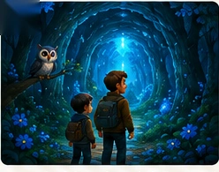

📖 Livros infantis interativos · gratuitos
Aventuras em que cada escolha muda o caminho. Feitas para pais, mães, avós e filhos descobrirem juntos.

⭐ Nova história disponível
Lucas e seu pai entram em uma floresta mágica cheia de mistérios. Em cada momento da aventura, você decide o que acontece.
Ler juntos é um dos momentos mais simples e mais bonitos que adultos e crianças podem compartilhar. Estas histórias foram criadas para acontecer nesse espaço — sem pressa, sem tela dominante, só a história e as pessoas que você ama.
Todos os livros são gratuitos. Se uma história proporcionou um momento especial para sua família, você pode contribuir voluntariamente para ajudar a criar novas aventuras.
Ver como apoiar